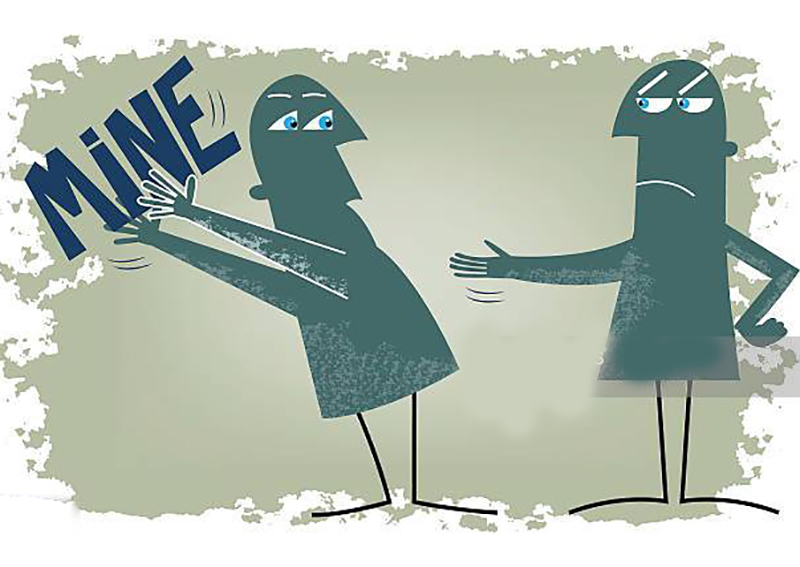
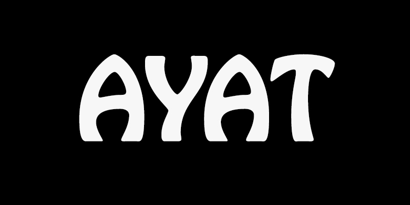

গার্লফ্রেন্ড
আমাকে ভালোবাসে। আমিও আমার জীবনের থেকেও তাকে বেশি ভালোবাসি। তাকে নিয়ে স্বপ্ন দেখি প্রতিটাক্ষণ, তাকেই ভাবি প্রতিনিয়ত। তাকে ছাড়া আমার জীবনে আর কিছুই নাই, এমন মনে হয় প্রতিনিয়ত। তাকে ছাড়া ভাবতে পারি না কিছুই।
স্পেশাল
খুবই। তার তুলনা হয় না। তার তুলনা সে শুধু নিজেই। সে সবকিছুতেই অলরাউন্ডার। সে পারে না এমন জিনিস খুব কমই আছে। সে নিজেও জানে না, সে কতটা স্পেশাল।
মিল
তার সাথে আমার সবকিছুতে, এত মিল বোধহয় আর কিছুতে নাই। আর কারো মাঝেই নাই। আমরা কোনো কিছু বলার বা করার আগেই চোখ বন্ধ করেই বলে দিতে পারি বেশিরভাগ সময় অন্যজন কি বলবে বা করবে। আমাদের যখন দুইজনের দেখা হয় নাই, তখনকার ঘটনা বলতে গেলেও দেখা যায় প্রায় সবই মিলে যায়।
সুখ
সে যতক্ষণ পাশে থাকে মনে হয় আমার মত সুখী মানুষ দুনিয়াতে আর একটাও নেই। আমিই সব থেকে সুখী। যে যখন আমার হাত ধরে তখন মনে হয় আমিই পৃথিবীর সবথেকে সুন্দর এবং সর্বশ্রেষ্ঠ মানুষ। এতো এতো মানুষের ভিড়েও সে আমাকেই বেছে নিয়েছে। তার সাথে কাটানো প্রতিটা মুহূর্ত আমার লাইফের সেরা মুহূর্ত।
সারপ্রাইজ
জিনিসটা খুব ভালো মত দিতে পারে সে। সে আমাকে এই অল্প সময়ে এত সারপ্রাইজ দিয়েছে যার অর্ধেকও আমি বাকি পুরাটা সময়তে পাইনি।
প্রথম
সবকিছুই সারাজীবন মনে থাকে, আর কিছু মনে থাকুক বা না থাকুক। প্রথম কোনো কিছুই কখনো ভুলা যায় না। সে আমাকে আমার জীবনের অনেক প্রথম জিনিসের স্বাদ দিয়েছে। যেই স্বাদ সারা জীবন লেগে থাকবে।
স্বার্থপর

কথায় আছে বেশি ভালোবাসাতে কষ্টও বেশি। এজন্যই হয়তো আর পারছি না। আমি একটা স্বার্থপর ছেলে। তাইতো আমার অভিযোগও অনেক বেশি। নিজের স্বার্থ ছাড়া তো আর কিছু বুঝি না। কেমনে ভালোবাসতে হয় তাও হয়তো জানি না।
চাহিদা
অনেক বেশি আমার। একটু পর পরই বলি কল দাও। তোমাকে একটু দেখতে দাও। তোমার একটু কথা শুনতে দাও। তোমাকে ছাড়া ভালো লাগছে না। আরো কিছুক্ষণ থাকো। আরেকটু কথা বলো। তোমার সাথে কথা না বলে ঘুমাতে পারছি না। একটু কল দাও। তার যে পরিবারের মানুষজন আছে, তাদের সাথে যে তার সময় কাটানোর সময় দরকার সেইটাও আমি বুঝতে চাই না।
অপেক্ষা
আমার গার্লফ্রেন্ডকে যেই সময়টায় আমার দরকার, সেই সময়টায় সে অপেক্ষা করে আরেকজনের জন্য। আমার সাথে কথা বলতেও তখন তার বিরক্ত লাগে। যদিও সে মুখ ফুটে বলে না কিন্তু তার আচার আচরণে ঠিকই বুঝা যায়। হ্যাঁ সে বাকি সময় পুরাটাই আমাকে দেয়, কারণ তখন অন্য কেউ অনেক ব্যস্ত থাকে। সেই সময় আমার গার্লফ্রেন্ড আমাকে খুঁজে তার একাকিত্ব কাটানোর জন্য।
অভিযোগ
সে বলে সে আমাকে ভালোবাসে, মাঝে মাঝে সে এমন ভাব করে, সে শুধু আমাকেই চায় সবসময়। সে কি ইচ্ছার বিরুদ্ধে তখন অমন করে নাকি মন থেকেই তখন আমার সাথে তার সবসময় থাকতে ইচ্ছা হয় তা সে এবং আল্লাহ ই জানেন।
প্রতিজ্ঞা
করেছিলো, আমাকে কখনোই দূরে সরাবে না। সব সময় থাকবে আমার সাথে এবং রাখবে আমাকে পাশে।
আয়াত

আমাদের মেয়ের নাম হবে, এটাও ঠিক করে রেখেছিলো সে।
পরিকল্পনা
ছিলো একসাথে অনেক কিছু করার। অনেক জায়গায় যাওয়ার। আমারও পরিকল্পনা ছিলো তাকে অনেকভাবে সারপ্রাইজ দেয়ার। কোনো সুযোগই মিললো না সেই ভাবে।
প্রশ্নগুলি
সমস্যা আমারই। অন্যজনের সাথে সম্পর্ক আছে জেনেও কেনো আমি সম্পর্কে জড়াতে গেলাম? অনেক ভালোবাসি বলে? ভালোবাসলেই কি সম্পর্কে জড়াতে হবে? অনেকেতো ভালোবেসেও না বলে নিজের মাঝে রেখেই পার করে দেয় জীবন। আমি কেনো অমন করলাম না? আমিও তো অমন ই ছিলাম শুরু থেকেই। পরে যেয়ে কি হলো আমার?
ভালোবাসা
তাকে ছাড়া আমার পৃথিবী বলে কিছু নাই, কারণ সেই ই যে আমার পৃথিবী। চেয়েছিলাম শুধু তার ভালোবাসা, কিন্তু সবাই তো আর জীবনে ভালোবাসা পায় না। আমিও না হয় তাদের দলেই থাকলাম। আমি যেইভাবে ভালোবাসি, সেও যে আমাকে তেমন ভাবেই ভালোবাসবে এটা ভাবা তো অবশ্যই বোকামি ছাড়া আর কিছুই না।
অবহেলা
এই জিনিসটা খুবই কষ্টের একটা জিনিস। যার সাথে এটা ঘটে সে খুব ভালো করে জানে এর কষ্ট। আমার গার্লফ্রেন্ড আমাকে মাঝে মাঝে এতই এড়িয়ে চলে যে, সে আমার মেসেজ দেখেও না দেখার ভান করে থাকে। সে অনলাইনেই থাকে। অন্যজনের সাথে কথাও বলে অথচ আমার পাঠানো মেসেজ সিন করার সময় তার হয় না। আমি দেখেও না দেখার ভান করে থাকি।
ঘুম
তার সাথে কথা না বলে আমার ঘুম হয় না। সেইটা সে খুব ভালো করেই জানে। আমাকে ৫ টা মিনিট সময় দিলেই হয়। তবুও সে মাঝে মাঝে সেই ৫ টা মিনিট সময় আমার জন্য বের করতে পারে না। কারণ ওই সময় তো সে অন্য কারোর জন্য অপেক্ষা করে।
রাগ

আজকাল একটু বেশিই করে। কারণে অকারণে রাগ করে। দেখে মনে হয় সরাসরি বলতে পারছে না লাইফ থেকে চলে যেতে। তাই বুঝাচ্ছে এভাবে। এই যেমন সে ভিডিও কল দিয়েছে, আমি রিসিভ করার সাথে সাথেই সে ক্যামেরা বন্ধ করে দিয়েছে। আমি তাকে ক্যামেরা চালু করতে বললাম সে রেগে কল কেটে দিলো। সে কল দিলো, আমি কোনো কারণে রিসিভ করতে পারি নাই, তারপর সে আর আমার কল রিসিভ করে না, বার্তাগুলোর প্রতিউত্তর দেয় না।
ভঙ্গ
ভালোবাসলেই সারাজীবন পেতে হবে এমনতো কোনো কথা নাই। দূর থেকেও তো অনেকে ভালোবাসে। আজ থেকে না হয় দূর থেকেই বাসবো ভালো। তার সাথে একাল যেমন একসাথে সাজাতে চেয়েছিলাম, তেমনি পরকালও একসাথেই সাজাতে চেয়েছিলাম। আল্লাহ সেইটা ভাগ্যে রাখেন নাই। কেনো রাখেন নাই সেইটা তিনিই ভালো জানেন।
আমাদের দুইজনের অনেক বেশি মিল বলেই হয়তো। আমাদের সুখের পরিমান অনেক বেশি হয়ে যাবে বোধহয়, কিন্তু এত সুখতো আল্লাহ একজনের জন্য বরাদ্দ করেন না। তাই হয়তো এমন। তাই হয়তো এই আমারই চলে যাওয়া লাগছে।
বিদায়

এই শব্দটা আমি অনেক ঘৃনা করি, অথচ এইটাই আজ আমার মুখে শোভা পাচ্ছে।
ভালো থেকো। আল্লাহ তোমাকে অনেক সুখী করুন। (আমিন)